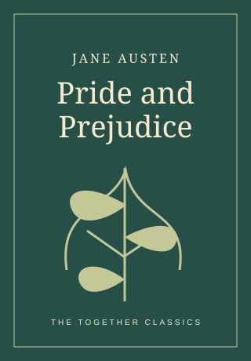
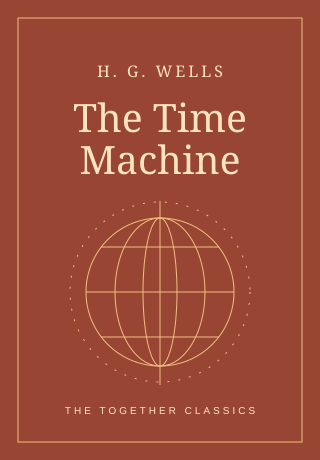

Your sofa. Your people.
Meet online.
Find a circle beyond your postcode. Drop into chapter conversations whenever life gives you a quiet moment.
Explore virtual circlesA few chapters. A shared thought. A conversation that stays with you. Find your reading circle, online or around a table.
No perfect reading habits required. Just a little curiosity about the story, and each other.
Find a circle beyond your postcode. Drop into chapter conversations whenever life gives you a quiet moment.
Explore virtual circlesLet a book be your reason to get out, find a familiar face, and make a little room for connection nearby.
Explore in-person circles

Sometimes that’s all it takes. A shared book gives you a place to start. A gentle reading plan and thoughtful questions keep the conversation going.
Step inside the previewExplore with two public-domain classics. Curated prompts, local-only participation.
Online or in person. A quick adventure or a slow Sunday read. Choose what feels like you.
Follow a gentle chapter plan. Bring a question, a favourite detail, or a completely different take.
Celebrate finishing, choose the next book together, and make space for friendships to grow.
Explore the experience. No account or payment needed.
Find your circle